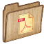
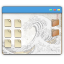

|

|
Documentation
There is extensive documentation
available for Aegis, including
|
|
|
Getting Started
There are a number of resources available for you:
-
There is a
«worked example»
of the first few change sets of a new
project in the User Guide.
-
There are some Template Projects
which can be downloaded and unpacked using one of Aegis'
distributed development mechanisms, resulting in immediately
working projects managed by Aegis.
-
OSS developers will be intersted in the simple GNU auto tools example.
If your project uses
a simple GNU Auto Tools configuration, this example has
instructions to quickly get your project working under Aegis.
|

|
Distributed Development
-
The Geographically Distributed Development chapter of the User Guide describes how to use the «aedist»(1)
command to send and receive change sets.
-
Both of the aepatch(1) and «aetar»(1)
commands may also be used to send and receive
change sets. See the Reference Manual
for their man(1) pages.
-
The «Working in Teams»
section of the How To
describes a number of ways to
distribute projects.
-
The Template Projects
provide a simple way to get a project started quickly and easily.
They are implemented using one of Aegis' distributed development
methods.
-
The feed
demonstrates how developers can
know when remote change sets are available. This particular
link is for Aegis itself, but this mechanism is available
for your Aegis projects, too, if you choose to turn it on.
|
|
|
Download
-
The Download page has links to the
download files.
-
The BUILDING file in the
tarball
contains instructions for building Aegis, or
you could use the nicely formatted Building section
of the Reference Manual.
-
A number of distributions include Aegis, so it may be possible
to download a pre-built binary.
-
There are problems using Aegis on Windows NT
due to a dissonance in security models between
Unix and Windows NT. However, it is possible to build a single
user version using Cygwin, see the Windows NT
page for more information.
|
|
|
Getting Help
|
|
|
Reference Sites
|
|

|
GUI Interfaces
There are several projects which are aimed at providing this.
-
«Ages»
is a
GNOME-based front end to Aegis. It provides a comfortable way to
access the most common used functions available from Aegis.
-
«AdvantAegis»
(download it «here»)
is a Graphical User Interface (GUI) to Aegis.
AdvantAegis is written in wxPython (python with bindings).
-
There are some Tcl/Tk scripts in the Aegis source distribution.
They cover common activities such as creating and managing
change sets. See
«tkaenc»(1)
and
«tkaeca»(1)
in the Reference Manual
for more information.
-
The «aexver»(1)
command provides a GUI interface for
selecting two versions of a file to be differenced.
-
There is also the Aegis Web Interface
for many tasks which mine Aegis' extensive meta-data.
|